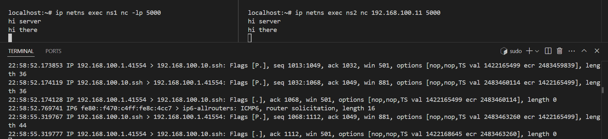

QEMU cluster
- Goal 1: Create and connect multiple Qemu nodes
- Goal 2: Create and connect multiple netns inside Qemu nodes
Goal 1: Create and connect multiple Qemu nodes

boot Qemu node using alpine image
# boot from iso image
# `-boot d` means boot from cdrom
qemu-system-x86_64 \
-boot d \
-cdrom alpine-standard-3.22.0-x86_64.iso \
-m 512 \
-hda alpine.backing.qcow2 \
-nographic \
-enable-kvm
# boot from backing file
# `-boot c` means boot from disk
qemu-system-x86_64 \
-boot c \
-m 512 \
-hda alpine.backing.qcow2 \
-nographic \
-enable-kvm
- Note:
- must run
setup-alpinein order to install bootable disk - chose
sda->sys-> (y) for erasing the disk
- must run
create Overlay image
# boot from overlay image
qemu-system-x86_64 \
-m 512 \
-hda alpine.overlay.img \
-enable-kvm \
-boot c \
-nographic
using screen to store QEMU consoles
# create session
screen -S qemu
#
# boot from overlay
#
# detach: Ctrl + A, then D
# attach:
screen -r qemu
connect multiple QEMU nodes
# create bridge
sudo ip link add name br0 type bridge
sudo ip addr add 192.168.100.1/24 dev br0
sudo ip link set br0 up
# config iptables for br0
iptables -I FORWARD -p all -i br0 -j ACCEPT
iptables -I INPUT -p all -i br0 -j ACCEPT
iptables -I OUTPUT -p all -o br0 -j ACCEPT
# create tap device
sudo ip tuntap add dev tap0 mode tap user $USER
sudo ip link set tap0 master br0
sudo ip link set tap0 up
# boot from overlay & plugin the tap
qemu-system-x86_64 \
-m 512 \
-hda alpine.overlay.qcow2 \
-netdev tap,id=net0,ifname=tap0,script=no,downscript=no \
-device e1000,netdev=net0 \
-enable-kvm \
-nographic
# setup interface
# Interface: eth0
# IP: 192.168.100.10
# Gateway: 192.168.100.1
setup-interfaces
# assign ip
ip addr add 192.168.100.10/24 dev eth0
- Note:
- MAC address is auto generated
- E.g:
52:54:00:12:34:56- where
52:54:00is Qemu prefix
- where
create netns node inside QEMU
# another overlay image for netns
qemu-img create -f qcow2 -b alpine.overlay.qcow2 -F qcow2 alpine.overlay.tap0.qcow2
qemu-img create -f qcow2 -b alpine.overlay.qcow2 -F qcow2 alpine.overlay.tap1.qcow2
- Create multiple qemu node
# node 0
qemu-system-x86_64 \
-m 512 \
-hda alpine.overlay.tap0.qcow2 \
-netdev tap,id=net0,ifname=tap0,script=no,downscript=no \
-device e1000,netdev=net0,mac=52:54:00:00:00:01 \
-enable-kvm \
-nographic
# node 1
# create tap1 device
sudo ip tuntap add dev tap1 mode tap user $USER
sudo ip link set tap1 master br0
sudo ip link set tap1 up
# boot node 1
qemu-system-x86_64 \
-m 512 \
-hda alpine.overlay.tap1.qcow2 \
-netdev tap,id=net1,ifname=tap1,script=no,downscript=no \
-device virtio-net-pci,netdev=net1,mac=52:54:00:00:00:02 \
-enable-kvm \
-nographic
# change ip address to 192.168.100.20
vi /etc/network/interfaces
service networking restart
- Now we have 2 Qemu nodes.
- Node 0 with IP 192.168.100.10
- Node 1 with IP 192.168.100.20
- 2 Nodes connect with brigde
br0via tap devices - 2 Nodes can ping eachother
# from node 0
localhost:~# ip addr show eth0
2: eth0: <BROADCAST,MULTICAST,UP,LOWER_UP> mtu 1500 qdisc pfifo_fast state UP 0
link/ether 52:54:00:00:00:01 brd ff:ff:ff:ff:ff:ff
inet 192.168.100.10/24 scope global eth0
valid_lft forever preferred_lft forever
inet6 fe80::5054:ff:fe00:1/64 scope link
valid_lft forever preferred_lft forever
localhost:~# ping 192.168.100.20
PING 192.168.100.20 (192.168.100.20): 56 data bytes
64 bytes from 192.168.100.20: seq=0 ttl=64 time=0.259 ms
64 bytes from 192.168.100.20: seq=1 ttl=64 time=0.288 ms
64 bytes from 192.168.100.20: seq=2 ttl=64 time=0.287 ms
# from node 1
localhost:~# ip a show eth0
2: eth0: <BROADCAST,MULTICAST,UP,LOWER_UP> mtu 1500 qdisc pfifo_fast state UP 0
link/ether 52:54:00:00:00:02 brd ff:ff:ff:ff:ff:ff
inet 192.168.100.20/24 scope global eth0
valid_lft forever preferred_lft forever
inet6 fe80::5054:ff:fe00:2/64 scope link
valid_lft forever preferred_lft forever
localhost:~# ping 192.168.100.20
PING 192.168.100.20 (192.168.100.20): 56 data bytes
64 bytes from 192.168.100.20: seq=0 ttl=64 time=0.030 ms
64 bytes from 192.168.100.20: seq=1 ttl=64 time=0.035 ms
64 bytes from 192.168.100.20: seq=2 ttl=64 time=0.035 ms
Goal 2: Create and connect multiple netns inside Qemu nodes

install iproute2
- The iproute2 package in base ISO image does not provide
netnsoption. - So, we will download the full version of iproute2 from alpine CDN
# download package wget https://dl-cdn.alpinelinux.org/alpine/edge/main/x86_64/libelf-0.193-r0.apk wget https://dl-cdn.alpinelinux.org/alpine/edge/main/x86_64/libmnl-1.0.5-r2.apk wget https://dl-cdn.alpinelinux.org/alpine/edge/main/x86_64/iproute2-minimal-6.15.0-r0.apk wget https://dl-cdn.alpinelinux.org/alpine/edge/main/x86_64/ifupdown-ng-iproute2-0.12.1-r7.apk wget https://dl-cdn.alpinelinux.org/alpine/edge/main/x86_64/libxtables-1.8.11-r1.apk wget https://dl-cdn.alpinelinux.org/alpine/edge/main/x86_64/iproute2-tc-6.15.0-r0.apk wget https://dl-cdn.alpinelinux.org/alpine/edge/main/x86_64/iproute2-ss-6.15.0-r0.apk wget https://dl-cdn.alpinelinux.org/alpine/edge/main/x86_64/iproute2-6.15.0-r0.apk
# move to Node0
scp *.apk root@192.168.100.10:/root
#
ssh root@192.168.100.10
apk add --allow-untrusted ./*.apk
# now `ip netns` is ready to use
create netns
- Setting up netns like this:

# Configuration
PHY_IF="eth0"
NET1="ns1"
NET2="ns2"
IP1="192.168.100.11/24"
IP2="192.168.100.12/24"
GW="192.168.100.1"
# Enable IP forwarding
echo 1 > /proc/sys/net/ipv4/ip_forward
# Create network namespaces
ip netns add $NET1
ip netns add $NET2
# Create macvlan interfaces linked to $PHY_IF
ip link add macvlan1 link $PHY_IF type macvlan mode bridge
ip link add macvlan2 link $PHY_IF type macvlan mode bridge
# Assign interfaces to namespaces
ip link set macvlan1 netns $NET1
ip link set macvlan2 netns $NET2
# Bring up interfaces inside namespaces
ip netns exec $NET1 ip addr add $IP1 dev macvlan1
ip netns exec $NET2 ip addr add $IP2 dev macvlan2
ip netns exec $NET1 ip link set dev macvlan1 up
ip netns exec $NET2 ip link set dev macvlan2 up
# loopback up
ip netns exec $NET1 ip link set lo up
ip netns exec $NET2 ip link set lo up
- Note 1. Why macvlan?
- by default, netns does not have a MAC address
- So, we create a macvlan interface and move it into netns
- Kernel give macvlan interface an unique MAC address
- macvlan interface is bond to
eth0where eth0 istap0, andtap0hasbr0as master -
The flow of layer 2 is: netns -> macvlan interface ->
tap0->br0 -
Now the 2 netns can ping each other:
localhost:~# ip netns exec ns1 ping 192.168.100.12
PING 192.168.100.12 (192.168.100.12): 56 data bytes
64 bytes from 192.168.100.12: seq=0 ttl=64 time=0.033 ms
64 bytes from 192.168.100.12: seq=1 ttl=64 time=0.040 ms
-
The flow of ICMP package:

-
Because macvlan allow each netns has it's own MAC address So, bridge
br0can catch ethenet package send fromns1and forward it tons2 -
Using netcat to test the connection between 2 netns.
- Using tcpdump to see the package is sent to
br0(192.168.100.1) 
- Using tcpdump to see the package is sent to
create and connect netns(s) from multiple Qemu nodes
- On Qemu Node2, create 2 netns the same way as we did on Qemu Node1
- Remember to change IP address of netns to
.21and.22

- Ping from netns inside Node2 to netns inside Node1
localhost:~# ip netns exec ns1 ip a
1: lo: <LOOPBACK,UP,LOWER_UP> mtu 65536 qdisc noqueue state UNKNOWN group default qlen 1000
link/loopback 00:00:00:00:00:00 brd 00:00:00:00:00:00
inet 127.0.0.1/8 scope host lo
valid_lft forever preferred_lft forever
inet6 ::1/128 scope host proto kernel_lo
valid_lft forever preferred_lft forever
5: macvlan1@if2: <BROADCAST,MULTICAST,UP,LOWER_UP> mtu 1500 qdisc noqueue state UP group default qlen 1000
link/ether 7a:9c:73:31:91:8e brd ff:ff:ff:ff:ff:ff link-netnsid 0
inet 192.168.100.21/24 scope global macvlan1
valid_lft forever preferred_lft forever
inet6 fe80::789c:73ff:fe31:918e/64 scope link proto kernel_ll
valid_lft forever preferred_lft forever
localhost:~# ip netns exec ns1 ping 192.168.100.11
PING 192.168.100.11 (192.168.100.11): 56 data bytes
64 bytes from 192.168.100.11: seq=0 ttl=64 time=0.213 ms
64 bytes from 192.168.100.11: seq=1 ttl=64 time=0.382 ms
64 bytes from 192.168.100.11: seq=2 ttl=64 time=0.318
-
We can also use
netcatto let netns inside Node1 talks to netns inside Node2 -
This setup allow the cluster to be able to scale-up